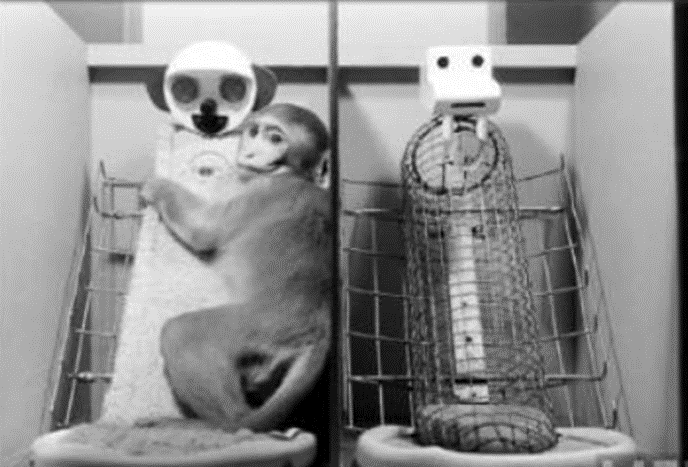

1. 등교를 거부하고 원격수업도 거부하는 금쪽이의 격한 분노
금쪽이는 이유없이 계속해서 등교를 거부하고 원격수업도 거부하는데 재촉하는 엄마에게 금쪽이는 급기야 “개XX”라고 소리를 지르고 온 힘을 다해 엄마에게 주먹을 휘두른다. 금쪽이는 엄마에게 방을 나가라고 하지만 요구가 받아들여지지 않자 베개를 던지기를 한다. 이어 컴퓨터 빔프로젝트까지 뽑아 들면서 위협과 분노에 찬 말투로 대답하자 결국 엄마는 금쪽이를 등교를 시키지 못하고 포기한다.
2. 학동기 등교거부는 학교 거부증을 의심해야 한다.
엄마는 “금쪽이가 10개월째 등교를 거부하고 있다”고 말했고, 이에 오은영은 “학동기 연령의 아이들이 등교를 힘들어하면 ‘학교 거부증’을 의심해봐야 한다”며 행동을 분석한다. 계속해서 금쪽이는 분노에 찬 말투로 대답하며 아슬아슬한 저녁 시간이 보여진다. 변비가 심한 금쪽이에게 엄마는 밀가루를 줄여야 한다고 말하지만, 금쪽이는 막무가내로 피자를 사내라고 한다. 자신의 요구를 엄마가 들어주지 않자 폭발하고만 금쪽이는 또다시 휴대전화를 던지며 엄마를 위협한다.
3. 내재된 불안과 두려움이 자기주도적 고집불통의 정서적 불안정 증가
오은영 박사는 금쪽이가 아침에 특히 예민한 아이이고 비몽사몽한 시간이 인생 최악의 순간인 아이라고 표현했다. “금쪽이는 지나치게 자기 주도적이고, 고집불통인 상태다”라며 “금쪽같은 내 새끼 사상, 최장기 솔루션이 될 것 같다”고 말한다. 등교를 거부하는 학교 거부증이라는 증상을 가진 아이들이 증가하고 있다가 코로나19로 인하여 불안과 두려움이 증폭되면서 오늘날 생각보다 많은 실정이다.
4. 아이에게 엄마가 강요보다는 스스로 얘기하도록 자율성을 주도록 한다.
사실 금쪽이는 엄마에게 화만 내는 건 아니라는 점을 알게 된다. 금쪽이는 엄마를 너무 사랑하고 엄마의 손을 차지하려고 동생 누나와 쟁탈전을 벌이는 순진한 마음이 있다는 점을 발견하게 된다. 오은영박사는 금쪽이같은 아이들은 민주적인 방식으로 문제 해결을 위한 의논 및 협의가 필요하다는 제안을 하였다. 결국 금쪽이가 게임에서 자신이 낸 의견대로 순순히 벌칙을 받고 받아들이게 된다. 그러므로 아이가 먼저 말로 제시한 약속은 지킬 확률이 높으니 아이에게 엄마가 강요보다는 스스로 얘기하도록 만들어야 한다.